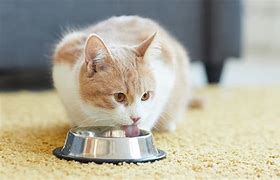
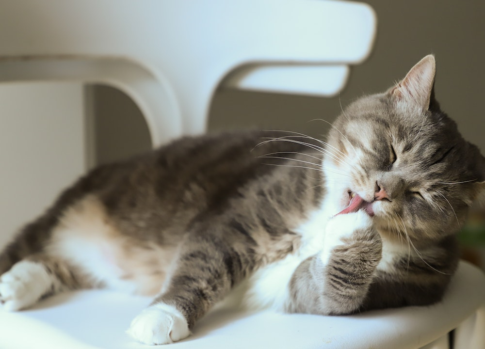

Alimentación equilibrada
La planificación de comidas y el control de las porciones son prácticas esenciales para mantener a tu felino en su mejor estado. Para empezar, es importante seleccionar alimentos de alta calidad y adecuados para su etapa de vida, ya sea un gatito, adulto o senior.
Te recomendamos que consultes con tu veterinario para determinar las necesidades específicas de tu gato en cuanto a dieta, pues estas varían de un gato a otro por temas como la edad o la raza.
Además, establece horarios regulares para las comidas, pues los gatos tienden a apreciar la rutina, y tener horarios fijos les ayuda a mantener un sistema digestivo saludable.
Por otro lado, evita dejar comida disponible todo el tiempo, ya que esto puede llevar al sobrepeso. En lugar de ello, proporciona porciones adecuadas según las indicaciones del paquete de alimentos o las recomendaciones de tu veterinario.
No te olvides de asegurarte de que siempre haya agua fresca y limpia disponible. Al seguir estas pautas, estarás contribuyendo significativamente a la salud y felicidad de tu gato.

Higiene y aseo
El cuidado de la higiene y el aseo de tu gato es esencial para mantenerlo feliz y saludable. Específicamente, uno de los aspectos más destacados es el cuidado del pelaje.
Dependiendo de la raza y tipo de pelaje de tu gato, necesitarás cepillarlo regularmente para evitar la formación de nudos y reducir la pérdida de pelo en casa. Como beneficio
adicional, el cepillado también es una excelente manera de fortalecer el vínculo entre tú y tu felino amigo, ya que la mayoría de los gatos disfrutan de esta atención.
Por tanto, limpia la caja de arena al menos una vez al día y cámbiala completamente de forma regular. También es importante cuidar la higiene bucal de tu gato. Puedes hacerlo a
través de cepillado dental específico para gatos o proporcionando alimentos diseñados para mantener sus dientes limpios. La higiene y el aseo adecuados no solo mantendrán a tu gato
reluciente, sino que también contribuirán a su bienestar general.
